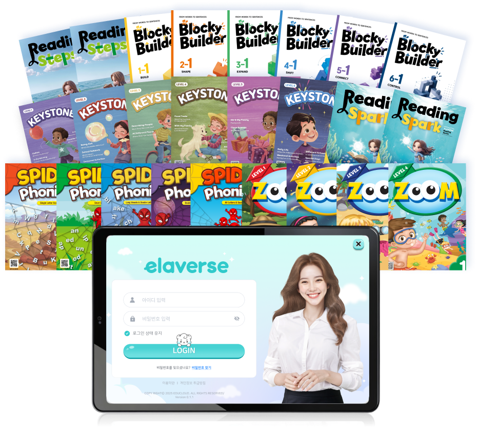
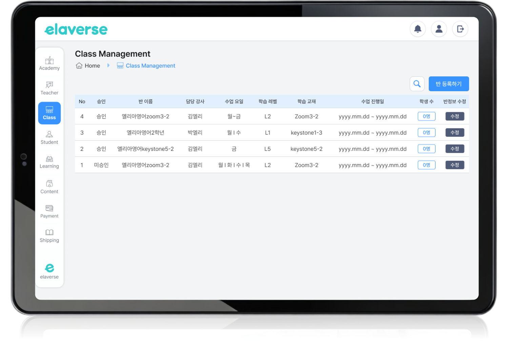
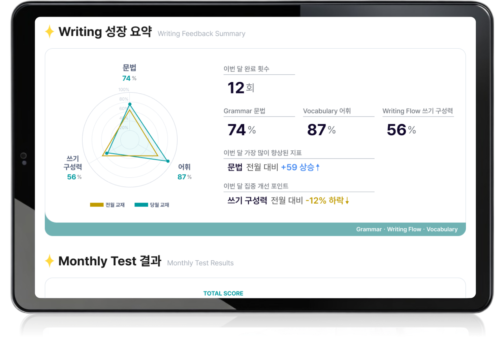

Textbook
교재·레벨·학습 목표

AI-POWERED LEARNING EXPERIENCE
교재와 학습 목표를 이해한 ELEA가1:1 대화와 발화 훈련을 제공하고,
말하기·쓰기 평가와 학습 리포트로 연결합니다.
교재·레벨·학습 목표
1:1 대화와 발화 훈련

말하기·쓰기 분석

피드백·대시보드·학부모 리포트

AI-Powered Textbook Experience
ELEA는 자유대화형 AI가 아니라,
교재의 구성과 학습 목표를 기반으로 수업을 운영하는
교재 기반 AI 디지털휴먼입니다.
기존 교재, 자체 교재와 파트너 교재를
예습·복습·반복 발화 훈련과 확장 학습으로 연결합니다.

ELEA LEARNING FLOW
교재와 학습자 정보를 기반으로 수업 흐름을 구성하고,
ELEA와의 상호작용 결과를 평가와 피드백, 학습 리포트로 연결합니다.


교재·레벨·학습 목표 입력
Assessment & Learner Feedback
ELEA는 학습자의 말하기와 쓰기 결과를 분석하고,응답 결과와 학습 단계에 맞는 피드백을 제공합니다.
학습자는 교정, 힌트와 반복 학습을 통해 자신의 오류를 확인하고 다시 학습할 수 있습니다.


학습자의 발화 결과를 분석하고 발음, 유창성 및 응답 수행에 대한 학습 피드백을 제공합니다.

문장 구성, 철자와 문법 오류를 분석하고 학습 단계에 맞는 쓰기 피드백을 제공합니다.

DASHBOARD & LEARNING REPORT
ELEA의 학습 결과는 교사용 대시보드와 학부모용 학습 리포트로 연결됩니다.
교사는 학습 진행과 평가 결과를 확인하고, 학부모는 자녀의 학습 과정과 변화를 확인할 수 있습니다.

학습 진행 현황 / 말하기·쓰기 평가 결과 / 학습자별 수행 정보 / 수업 및 운영 데이터

학습 참여 현황 / 주요 학습 결과 / 말하기·쓰기 수행 내용 / 학습 변화 및 피드백